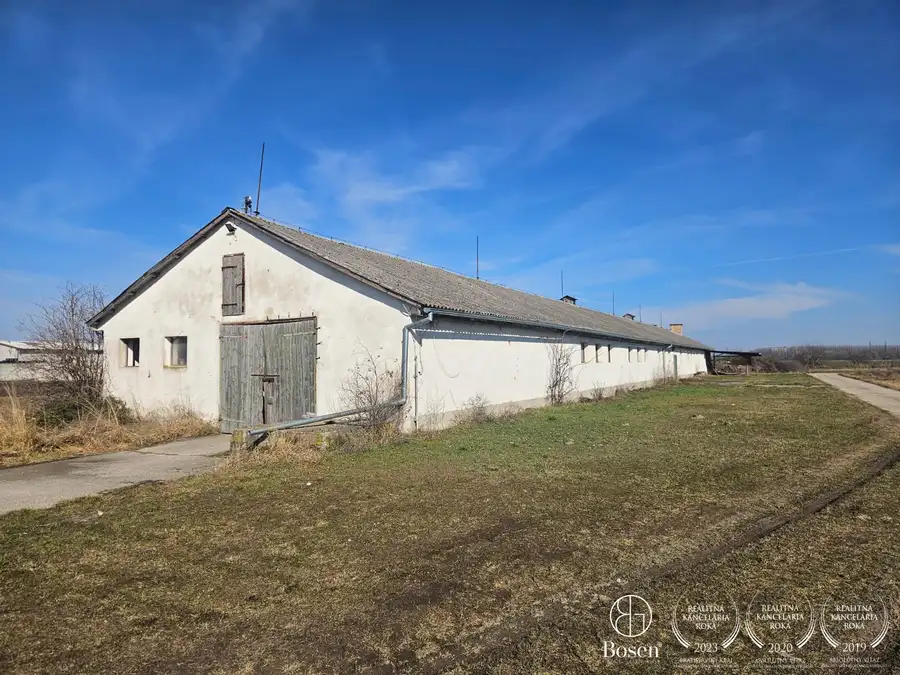

BOSEN | Rekreačný areál s piatimi apartmánmi – Veľký Meder
Veľký Meder
- Plocha620 m²
- StavČiastočná rekonštrukcia
- VlastníctvoOsobné
O nehnuteľnosti
Bosen Group Vám ponúka na predaj výnimočný rekreačný areál pozostávajúci z 5 samostatných, moderne vybavených apartmánov nachádzajúcich sa na rozsiahlom pozemku o výmere 2 303 m².Areál je situovaný len 200 metrov od termálneho kúpaliska, čo z neho robí mimoriadne atraktívnu investíciu s preukázateľnou návratnosťou.Aktuálna priemerná vyťaženosť je 50%, pričom jeden apartmán sa prenajíma za 90 € / noc – spolu 5 apartmánov, tržby min. 80000 €/ rok, čo zabezpečuje stabilný a pravidelný príjem.DISPOZÍCIA A VYBAVENIEJeden apartmán disponuje úžitkovou plochou 124 m², sofistikovaným pôdorysom a moderným dizajnom.Interiérširoká vstupná chodba ,priestranná obývacia izba prepojená s kuchyňou a jedálňou, plne vybavená kuchynská linka so spotrebičmi, 2 dvojlôžkové spálne s priamym výstupom na terasu, 2 kúpeľne so sprchovacím kútom, wifi internet, moderné, vkusné zariadenie, na mieru robený nábytok (stolárska výroba)Technické riešeniahliníkové okná, fasáda s kvalitnou tepelnou izoláciou, ľahká strešná krytina, sadrové omietky, teplovodné podlahové kúrenie – plynový kotol, klimatizácia, drevené parkety s prírodným dubovým povrchom, terasy z agátového drevaPOZEMOK A AREÁLveľkosť pozemku: 2 303 m², 5 samostatných apartmánov, až 12 parkovacích miest, upravený exteriér vhodný na rekreáciu aj dlhodobý pobyt, výborná dostupnosť ku kúpaniu, službám a centru mestaLOKALITALokalita sa nachádza:20 km od Dunajskej Stredy a 35 km od KomárnaDominantou mesta je termálne kúpalisko.Mesto ponúka kompletnú občiansku vybavenosť – TESCO, Kaufland, BILLA, služby, reštaurácie a dobrú dostupnosť.INVESTIČNÉ INFOpriemerná vyťaženosť: 50 %, aktuálna cena prenájmu: 90 € / noc / apartmán, celkovo 5 apartmánových jednotiek, tržby min. 80000 €/ rok, vysoká obsadenosť počas sezóny aj mimo nej, stabilný a overený príjemCENA800 000 €MAKLÉR (kontakt)Maklér: Veronika Kissovátel.: +421 904 068 144e-mail: kissova@bosen.skRealitná kancelária BOSEN GROUP je členom Realitnej únie SR a riadi sa jej Realitným kódexom. Uvedená cena je konečná – zahŕňa províziu RK, právny servis advokátskej kancelárie, správne poplatky na katastri, poradenstvo pri prevode nehnuteľnosti a bezplatnú ponuku financovania prostredníctvom hypotéky.
Parametre
| Druh | Apartmánový dom |
|---|---|
| Dátum zverejnenia | 2. 6. 2026 |
| Stav nehnuteľnosti | Čiastočná rekonštrukcia |
| Typ | Predaj |
| Vlastníctvo | Osobné |
| Zastavaná plocha | 620 m² |
| Úžitková plocha | 620 m² |
Kde to je


Mohlo by Vás zaujímať
 DomNové10
246 500 €Bosen | 5 izbový rodinný dom s veľkou záhradou, Horné Saliby
Horné Saliby
180 m²
Bosen Group Vám ponúka na predaj priestranný, kompletne zrekonštruovaný 5 izbový rodinný dom v obci Horné Saliby. Stačí pozrieť, rozhodnúť sa a…
DomNové10
246 500 €Bosen | 5 izbový rodinný dom s veľkou záhradou, Horné Saliby
Horné Saliby
180 m²
Bosen Group Vám ponúka na predaj priestranný, kompletne zrekonštruovaný 5 izbový rodinný dom v obci Horné Saliby. Stačí pozrieť, rozhodnúť sa a…
 Komerčné priestoryNové9
1 200 €Priestranný 100 m² priestor v Dunajskej Strede – dokončenie majiteľom podľa Vašich predstáv
Dunajská Streda
100 m²
kancelárie a poradenstvo pri prenBosen Group Vám ponúka na prenájom veľkometrážny 100 m² priestor vo výbornej lokalite v Dunajskej Strede.Budova sa…
Komerčné priestoryNové9
1 200 €Priestranný 100 m² priestor v Dunajskej Strede – dokončenie majiteľom podľa Vašich predstáv
Dunajská Streda
100 m²
kancelárie a poradenstvo pri prenBosen Group Vám ponúka na prenájom veľkometrážny 100 m² priestor vo výbornej lokalite v Dunajskej Strede.Budova sa…

Komerčné priestoryNové10 Cena dohodouBOSEN | Priemyselný areál s 3 budovami, Kostolné Kračany – 18069 m² Kostolné Kračany 18069 m² Bosen Group Vám ponúka na predaj rozsiahly priemyselný areál s tromi budovami nachádzajúci sa v katastrálnom území Kostolné Kračany – Amadeho…